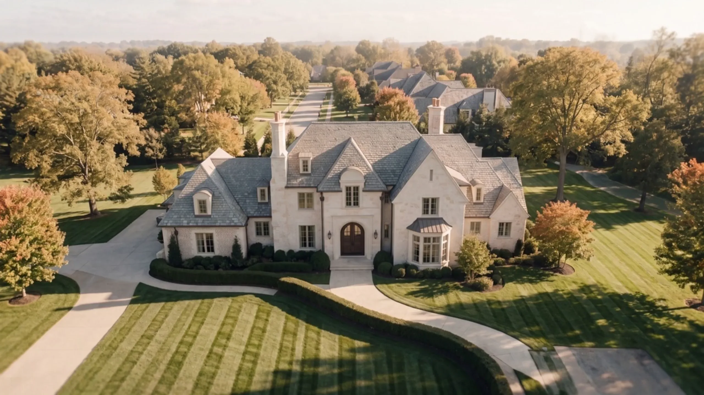
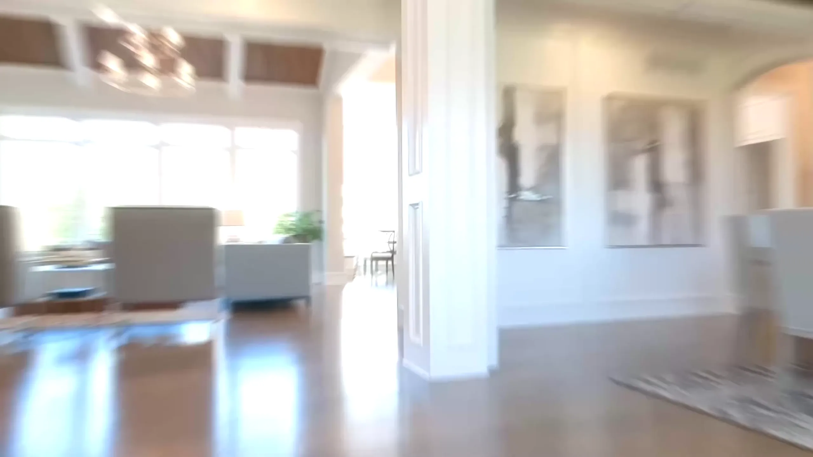
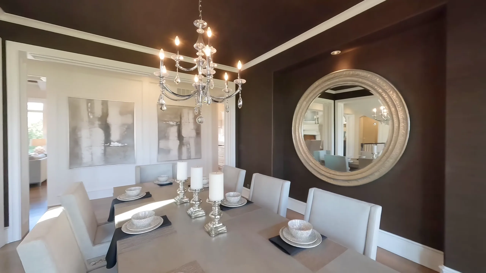
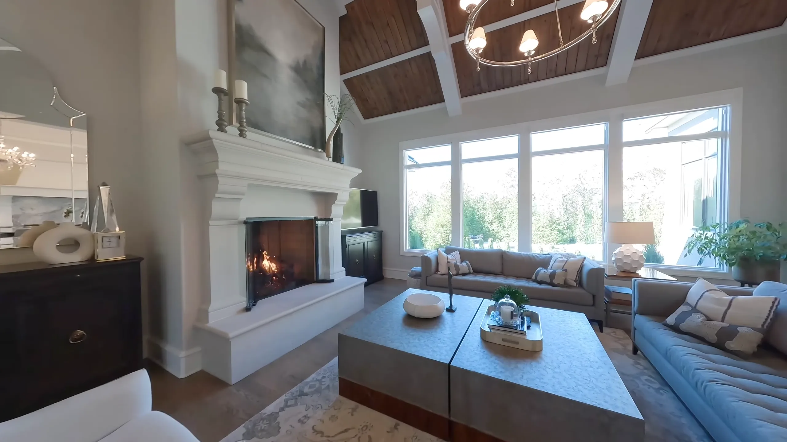
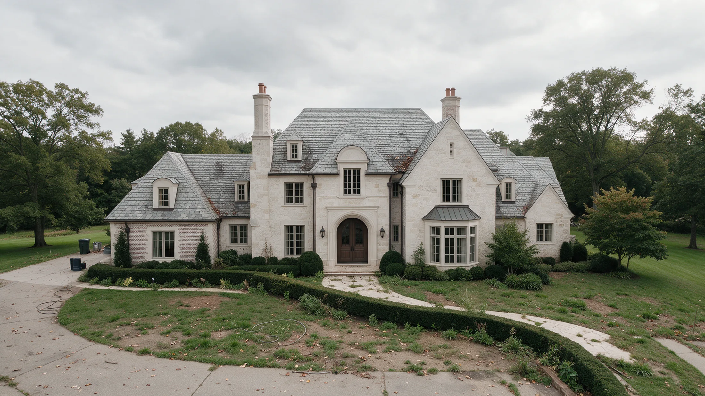
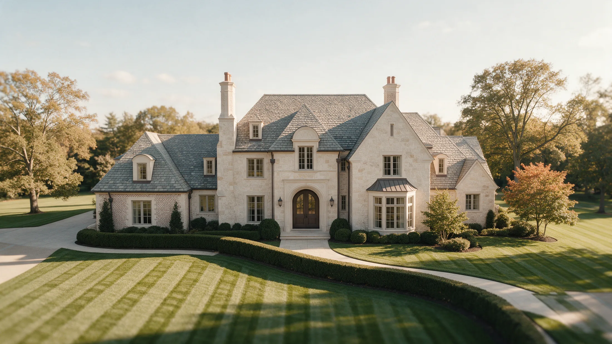
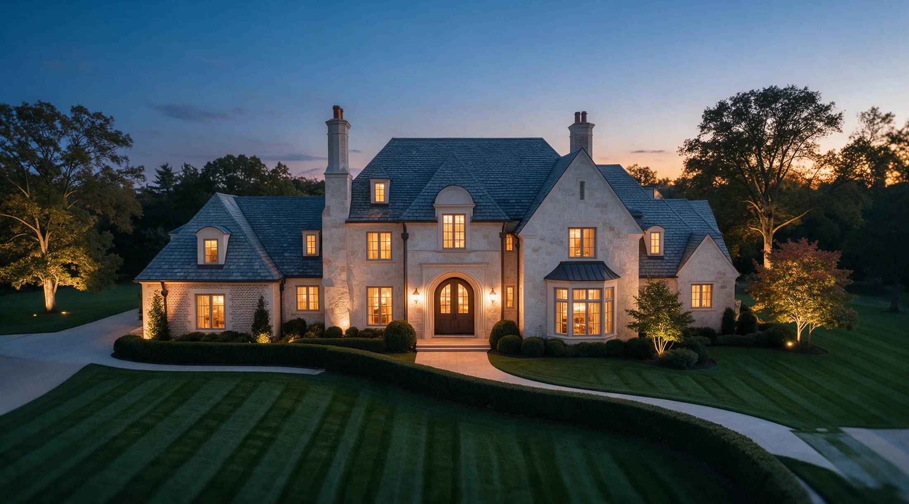
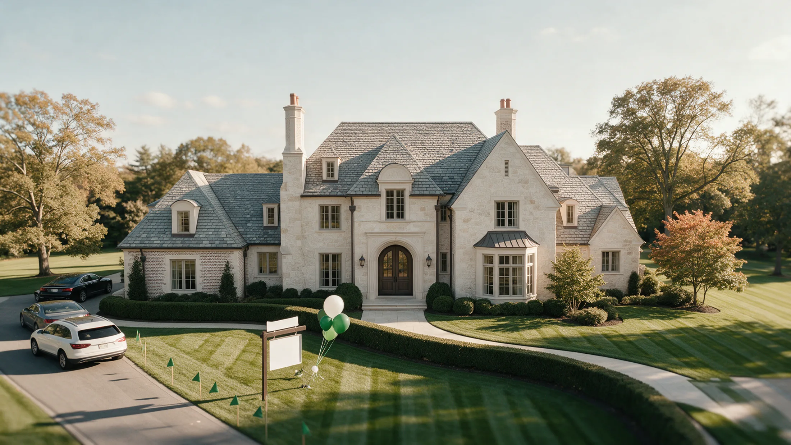

Let's sell your home the right way.
Follow one home from the air to the front door and through every room, then watch the marketing plan come together.




Lawn restored and striped
Walkway pressure washed
Roof and stone cleaned
Clutter cleared
Twilight photography
3D tour and video
Drone aerials
Every major listing site
Yard sign with a QR code
Open houses all weekend
Under contract
First, we get it ready.
Your Home Prep Advisor decides what is worth doing, and we line up the vendors.
Then we show it off.
Beautiful photos, 3D tours, drone views and video that make buyers stop scrolling.
Then we get it seen.
Every major site, our buyer network and paid reach, plus open houses that fill the driveway.
Then we bring buyers through your front door.
Feedback within 48 hours, a weekly call, and a negotiation plan set before the first offer. Now build the plan for your home.
Build my plan